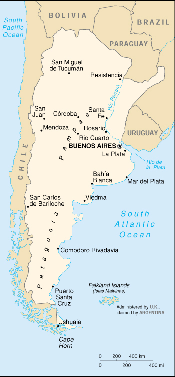

|
Argentina | |
| Introduction Geography People Government Economy Communications Transportation Military Transnational Issues | ||
|  | ||
| Argentina | Introduction | Top of Page |
| Background: | Following independence from Spain in 1816, Argentina experienced periods of internal political conflict between conservatives and liberals and between civilian and military factions. After World War II, a long period of Peronist dictatorship was followed by a military junta that took power in 1976. Democracy returned in 1983, and numerous elections since then have underscored Argentina's progress in democratic consolidation. |
| Argentina | Geography | Top of Page |
| Location: | Southern South America, bordering the South Atlantic Ocean, between Chile and Uruguay |
| Geographic coordinates: | 34 00 S, 64 00 W |
| Map references: | South America |
| Area: |
total:
2,766,890 sq km
land: 2,736,690 sq km water: 30,200 sq km |
| Area - comparative: | slightly less than three-tenths the size of the US |
| Land boundaries: |
total:
9,665 km
border countries: Bolivia 832 km, Brazil 1,224 km, Chile 5,150 km, Paraguay 1,880 km, Uruguay 579 km |
| Coastline: | 4,989 km |
| Maritime claims: |
contiguous zone:
24 NM
continental shelf: 200 NM or to the edge of the continental margin exclusive economic zone: 200 NM territorial sea: 12 NM |
| Climate: | mostly temperate; arid in southeast; subantarctic in southwest |
| Terrain: | rich plains of the Pampas in northern half, flat to rolling plateau of Patagonia in south, rugged Andes along western border |
| Elevation extremes: |
lowest point:
Salinas Chicas -40 m (located on Peninsula Valdes)
highest point: Cerro Aconcagua 6,960 m |
| Natural resources: | fertile plains of the Pampas, lead, zinc, tin, copper, iron ore, manganese, petroleum, uranium |
| Land use: |
arable land:
9%
permanent crops: 1% permanent pastures: 52% forests and woodland: 19% other: 19% (1993 est.) |
| Irrigated land: | 17,000 sq km (1993 est.) |
| Natural hazards: | San Miguel de Tucuman and Mendoza areas in the Andes subject to earthquakes; pamperos are violent windstorms that can strike the Pampas and northeast; heavy flooding |
| Environment - current issues: |
environmental problems (urban and rural) typical of an industrializing economy such as soil degradation, desertification, air pollution, and water pollution
note: Argentina is a world leader in setting voluntary greenhouse gas targets |
| Environment - international agreements: |
party to:
Antarctic-Environmental Protocol, Antarctic-Marine Living Resources, Antarctic Seals, Antarctic Treaty, Biodiversity, Climate Change, Desertification, Endangered Species, Environmental Modification, Hazardous Wastes, Law of the Sea, Marine Dumping, Nuclear Test Ban, Ozone Layer Protection, Ship Pollution, Wetlands, Whaling
signed, but not ratified: Climate Change-Kyoto Protocol, Marine Life Conservation |
| Geography - note: | second-largest country in South America (after Brazil); strategic location relative to sea lanes between South Atlantic and South Pacific Oceans (Strait of Magellan, Beagle Channel, Drake Passage) |
| Argentina | People | Top of Page |
| Population: | 37,384,816 (July 2001 est.) |
| Age structure: |
0-14 years:
26.54% (male 5,077,593; female 4,842,811)
15-64 years: 63.04% (male 11,795,282; female 11,773,855) 65 years and over: 10.42% (male 1,609,672; female 2,285,603) (2001 est.) |
| Population growth rate: | 1.15% (2001 est.) |
| Birth rate: | 18.41 births/1,000 population (2001 est.) |
| Death rate: | 7.58 deaths/1,000 population (2001 est.) |
| Net migration rate: | 0.64 migrant(s)/1,000 population (2001 est.) |
| Sex ratio: |
at birth:
1.05 male(s)/female
under 15 years: 1.05 male(s)/female 15-64 years: 1 male(s)/female 65 years and over: 0.7 male(s)/female total population: 0.98 male(s)/female (2001 est.) |
| Infant mortality rate: | 17.75 deaths/1,000 live births (2001 est.) |
| Life expectancy at birth: |
total population:
75.26 years
male: 71.88 years female: 78.82 years (2001 est.) |
| Total fertility rate: | 2.44 children born/woman (2001 est.) |
| HIV/AIDS - adult prevalence rate: | 0.69% (1999 est.) |
| HIV/AIDS - people living with HIV/AIDS: | 130,000 (1999 est.) |
| HIV/AIDS - deaths: | 1,800 (1999 est.) |
| Nationality: |
noun:
Argentine(s)
adjective: Argentine |
| Ethnic groups: | white (mostly Spanish and Italian) 97%, mestizo, Amerindian, or other nonwhite groups 3% |
| Religions: | nominally Roman Catholic 92% (less than 20% practicing), Protestant 2%, Jewish 2%, other 4% |
| Languages: | Spanish (official), English, Italian, German, French |
| Literacy: |
definition:
age 15 and over can read and write
total population: 96.2% male: 96.2% female: 96.2% (1995 est.) |
| Argentina | Government | Top of Page |
| Country name: |
conventional long form:
Argentine Republic
conventional short form: Argentina local long form: Republica Argentina local short form: Argentina |
| Government type: | republic |
| Capital: | Buenos Aires |
| Administrative divisions: |
23 provinces (provincias, singular - provincia), and 1 autonomous city* (distrito federal); Buenos Aires; Buenos Aires Capital Federal*; Catamarca; Chaco; Chubut; Cordoba; Corrientes; Entre Rios; Formosa; Jujuy; La Pampa; La Rioja; Mendoza; Misiones; Neuquen; Rio Negro; Salta; San Juan; San Luis; Santa Cruz; Santa Fe; Santiago del Estero; Tierra del Fuego, Antartica e Islas del Atlantico Sur; Tucuman
note: the US does not recognize any claims to Antarctica |
| Independence: | 9 July 1816 (from Spain) |
| National holiday: | Revolution Day, 25 May (1810) |
| Constitution: | 1 May 1853; revised August 1994 |
| Legal system: | mixture of US and West European legal systems; has not accepted compulsory ICJ jurisdiction |
| Suffrage: | 18 years of age; universal and mandatory |
| Executive branch: |
chief of state:
President Fernando DE LA RUA (since 10 December 1999); Vice President Carlos "Chacho" ALVAREZ resigned 6 October 2000 and a replacement has not yet been named; note - the president is both the chief of state and head of government
head of government: President Fernando DE LA RUA (since 10 December 1999); Vice President Carlos "Chacho" ALVAREZ resigned 6 October 2000 and a replacement has not yet been named; note - the president is both the chief of state and head of government cabinet: Cabinet appointed by the president elections: president and vice president elected on the same ticket by popular vote for four-year terms; election last held 24 October 1999 (next to be held NA October 2003) election results: Fernando DE LA RUA elected president; percent of vote - 48.5% |
| Legislative branch: |
bicameral National Congress or Congreso Nacional consists of the Senate (72 seats; formerly, three members appointed by each of the provincial legislatures; presently transitioning to one-third of the members being elected every two years to six-year terms) and the Chamber of Deputies (257 seats; one-half of the members elected every two years to four-year terms)
elections: Senate - transition phase will begin in the 2001 elections when all seats will be fully contested; winners will randomly draw to determine whether they will serve a two-year, four-year, or full six-year term, beginning a rotating cycle renovating one-third of the body every two years; Chamber of Deputies - last held 24 October 1999 (next to be held NA October 2001) election results: Senate - percent of vote by bloc or party - NA%; seats by bloc or party - Peronist 40, UCR 20, Frepaso 1, other 11; Chamber of Deputies - percent of vote by bloc or party - NA%; seats by bloc or party - Alliance 124 (UCR 85, Frepaso 36, others 3), Peronist 101, AR 12, other 20 |
| Judicial branch: | Supreme Court or Corte Suprema (the nine Supreme Court judges are appointed by the president with approval by the Senate) |
| Political parties and leaders: | Action for the Republic or AR [Domingo CAVALLO]; Front for a Country in Solidarity or Frepaso (a four-party coalition) [Carlos ALVAREZ]; Justicialist Party or PJ [Carlos Saul MENEM] (Peronist umbrella political organization); Radical Civic Union or UCR [Raul ALFONSIN]; several provincial parties |
| Political pressure groups and leaders: | Argentine Association of Pharmaceutical Labs (CILFA); Argentine Industrial Union (manufacturers' association); Argentine Rural Society (large landowners' association); business organizations; General Confederation of Labor or CGT (Peronist-leaning umbrella labor organization); Peronist-dominated labor movement; Roman Catholic Church; students |
| International organization participation: | AfDB, Australia Group, BCIE, BIS, CCC, ECLAC, FAO, G-6, G-11, G-15, G-19, G-24, G-77, IADB, IAEA, IBRD, ICAO, ICC, ICFTU, ICRM, IDA, IFAD, IFC, IFRCS, IHO, ILO, IMF, IMO, Inmarsat, Intelsat, Interpol, IOC, IOM, ISO, ITU, LAES, LAIA, Mercosur, MINURSO, MIPONUH, MTCR, NSG, OAS, OPANAL, OPCW, PCA, RG, UN, UNCTAD, UNESCO, UNFICYP, UNHCR, UNIDO, UNIKOM, UNMEE, UNMIBH, UNMIK, UNMOP, UNTSO, UNU, UPU, WCL, WFTU, WHO, WIPO, WMO, WToO, WTrO, ZC |
| Diplomatic representation in the US: |
chief of mission:
Ambassador Guillermo Enrique GONZALEZ
chancery: 1600 New Hampshire Avenue NW, Washington, DC 20009 telephone: [1] (202) 238-6400 FAX: [1] (202) 332-3171 consulate(s) general: Atlanta, Chicago, Houston, Los Angeles, Miami, New York |
| Diplomatic representation from the US: |
chief of mission:
Ambassador James D. WALSH
embassy: Avenida Colombia 4300, 1425 Buenos Aires mailing address: international mail: use street address; APO address: Unit 4334, APO AA 34034 telephone: [54] (11) 4777-4533/4534 FAX: [54] (11) 4511-4997 |
| Flag description: | three equal horizontal bands of light blue (top), white, and light blue; centered in the white band is a radiant yellow sun with a human face known as the Sun of May |
| Argentina | Economy | Top of Page |
| Economy - overview: | Argentina benefits from rich natural resources, a highly literate population, an export-oriented agricultural sector, and a diversified industrial base. However, when President Carlos MENEM took office in 1989, the country had piled up huge external debts, inflation had reached 200% per month, and output was plummeting. To combat the economic crisis, the government embarked on a path of trade liberalization, deregulation, and privatization. In 1991, it implemented radical monetary reforms which pegged the peso to the US dollar and limited the growth in the monetary base by law to the growth in reserves. Inflation fell sharply in subsequent years. In 1995, the Mexican peso crisis produced capital flight, the loss of banking system deposits, and a severe, but short-lived, recession; a series of reforms to bolster the domestic banking system followed. Real GDP growth recovered strongly, reaching 8% in 1997. In 1998, international financial turmoil caused by Russia's problems and increasing investor anxiety over Brazil produced the highest domestic interest rates in more than three years, halving the growth rate of the economy. Conditions worsened in 1999 with GDP falling by 3%. President Fernando DE LA RUA, who took office in December 1999, sponsored tax increases and spending cuts to reduce the deficit, which had ballooned to 2.5% of GDP in 1999. Growth in 2000 was a disappointing 0.8%, as both domestic and foreign investors remained skeptical of the government's ability to pay debts and maintain its fixed exchange rate with the US dollar. One bright spot at the start of 2001 was the IMF's offer of $13.7 billion in support. |
| GDP: | purchasing power parity - $476 billion (2000 est.) |
| GDP - real growth rate: | 0.8% (2000 est.) |
| GDP - per capita: | purchasing power parity - $12,900 (2000 est.) |
| GDP - composition by sector: |
agriculture:
6%
industry: 32% services: 62% (2000 est.) |
| Population below poverty line: | 37% (1999 est.) |
| Household income or consumption by percentage share: |
lowest 10%:
NA%
highest 10%: NA% |
| Inflation rate (consumer prices): | -0.9% (2000 est.) |
| Labor force: | 15 million (1999) |
| Labor force - by occupation: | agriculture NA%, industry NA%, services NA% |
| Unemployment rate: | 15% (December 2000) |
| Budget: |
revenues:
$44 billion
expenditures: $48 billion, including capital expenditures of $NA (2000 est.) |
| Industries: | food processing, motor vehicles, consumer durables, textiles, chemicals and petrochemicals, printing, metallurgy, steel |
| Industrial production growth rate: | 1% (2000 est.) |
| Electricity - production: | 77.087 billion kWh (1999) |
| Electricity - production by source: |
fossil fuel:
60.3%
hydro: 30.7% nuclear: 8.75% other: 0.25% (1999) |
| Electricity - consumption: | 77.111 billion kWh (1999) |
| Electricity - exports: | 1.08 billion kWh (1999) |
| Electricity - imports: | 6.5 billion kWh (1999) |
| Agriculture - products: | sunflower seeds, lemons, soybeans, grapes, corn, tobacco, peanuts, tea, wheat; livestock |
| Exports: | $26.5 billion (f.o.b., 2000 est.) |
| Exports - commodities: | edible oils, fuels and energy, cereals, feed, motor vehicles |
| Exports - partners: | Brazil 24%, EU 21%, US 11% (1999 est.) |
| Imports: | $25.2 billion (f.o.b., 2000 est.) |
| Imports - commodities: | machinery and equipment, motor vehicles, chemicals, metal manufactures, plastics |
| Imports - partners: | EU 28%, US 22%, Brazil 21% (1999 est.) |
| Debt - external: | $154 billion (2000 est.) |
| Economic aid - recipient: | IMF offer of $13.7 billion (January 2001) |
| Currency: | Argentine peso (ARS) |
| Currency code: | ARS |
| Exchange rates: | Argentine pesos per US dollar - 1.000 (fixed rate pegged to the US dollar) |
| Fiscal year: | calendar year |
| Argentina | Communications | Top of Page |
| Telephones - main lines in use: | 7.5 million (1998) |
| Telephones - mobile cellular: | 3 million (December 1999) |
| Telephone system: |
general assessment:
by opening the telecommunications market to competition and foreign investment with the "Telecommunications Liberalization Plan of 1998", Argentina encouraged the growth of modern telecommunication technology; fiber-optic cable trunk lines are being installed between all major cities; the major networks are entirely digital and the availability of telephone service is being improved; however, telephone density is presently minimal, and making telephone service universally available will take some time
domestic: microwave radio relay, fiber-optic cable, and a domestic satellite system with 40 earth stations serve the trunk network; more than 110,000 pay telephones are installed and mobile telephone use is rapidly expanding international: satellite earth stations - 8 Intelsat (Atlantic Ocean); Atlantis II and Unisur submarine cables; two international gateways near Buenos Aires (1999) |
| Radio broadcast stations: | AM 260 (including 10 inactive stations), FM NA (probably more than 1,000, mostly unlicensed), shortwave 6 (1998) |
| Radios: | 24.3 million (1997) |
| Television broadcast stations: | 42 (plus 444 repeaters) (1997) |
| Televisions: | 7.95 million (1997) |
| Internet country code: | .ar |
| Internet Service Providers (ISPs): | 33 (2000) |
| Internet users: | 900,000 (2000) |
| Argentina | Transportation | Top of Page |
| Railways: |
total:
33,744 km (167 km electrified)
broad gauge: 20,594 km 1.676-m gauge (141 km electrified) standard gauge: 2,739 km 1.435-m gauge (26 km electrified) narrow gauge: 10,154 km 1.000-m gauge; 257 km 0.750-m gauge (2000) |
| Highways: |
total:
215,434 km
paved: 63,553 km (including 734 km of expressways) unpaved: 151,881 km (1998 est.) |
| Waterways: | 10,950 km |
| Pipelines: | crude oil 4,090 km; petroleum products 2,900 km; natural gas 9,918 km |
| Ports and harbors: | Bahia Blanca, Buenos Aires, Comodoro Rivadavia, Concepcion del Uruguay, La Plata, Mar del Plata, Necochea, Rio Gallegos, Rosario, Santa Fe, Ushuaia |
| Merchant marine: |
total:
26 ships (1,000 GRT or over) totaling 185,355 GRT/281,475 DWT
ships by type: cargo 9, petroleum tanker 11, railcar carrier 1, refrigerated cargo 2, roll on/roll off 1, short-sea passenger 2 (2000 est.) |
| Airports: | 1,359 (2000 est.) |
| Airports - with paved runways: |
total:
143
over 3,047 m: 4 2,438 to 3,047 m: 25 1,524 to 2,437 m: 57 914 to 1,523 m: 48 under 914 m: 9 (2000 est.) |
| Airports - with unpaved runways: |
total:
1,216
over 3,047 m: 2 2,438 to 3,047 m: 2 1,524 to 2,437 m: 56 914 to 1,523 m: 601 under 914 m: 555 (2000 est.) |
| Argentina | Military | Top of Page |
| Military branches: | Argentine Army, Navy of the Argentine Republic (includes Naval Aviation, Marines, and Coast Guard), Argentine Air Force, National Gendarmerie, National Aeronautical Police Force |
| Military manpower - military age: | 20 years of age |
| Military manpower - availability: | males age 15-49: 9,404,434 (2001 est.) |
| Military manpower - fit for military service: | males age 15-49: 7,625,425 (2001 est.) |
| Military manpower - reaching military age annually: | males: 335,085 (2001 est.) |
| Military expenditures - dollar figure: | $4.3 billion (FY99) |
| Military expenditures - percent of GDP: | 1.3% (FY99) |
| Argentina | Transnational Issues | Top of Page |
| Disputes - international: | claims UK-administered Falkland Islands (Islas Malvinas); claims UK-administered South Georgia and the South Sandwich Islands; territorial claim in Antarctica partially overlaps British and Chilean claims |
| Illicit drugs: | use as a transshipment country for cocaine headed for Europe and the US; increasing use as a money-laundering center; domestic consumption of drugs in urban centers is increasing |
{kind=link}